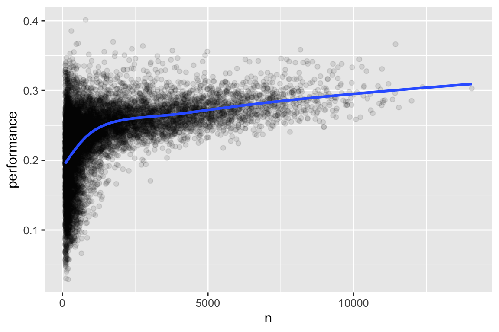

library(nycflights13)
library(tidyverse)
#> ── Attaching core tidyverse packages ───────────────────── tidyverse 2.0.0 ──
#> ✔ dplyr 1.2.1 ✔ readr 2.2.0
#> ✔ forcats 1.0.1 ✔ stringr 1.6.0
#> ✔ ggplot2 4.0.3 ✔ tibble 3.3.1
#> ✔ lubridate 1.9.5 ✔ tidyr 1.3.2
#> ✔ purrr 1.2.2
#> ── Conflicts ─────────────────────────────────────── tidyverse_conflicts() ──
#> ✖ dplyr::filter() masks stats::filter()
#> ✖ dplyr::lag() masks stats::lag()
#> ℹ Use the conflicted package (<http://conflicted.r-lib.org/>) to force all conflicts to become errors
flights
#> # A tibble: 336,776 × 19
#> year month day dep_time sched_dep_time dep_delay arr_time sched_arr_time
#> <int> <int> <int> <int> <int> <dbl> <int> <int>
#> 1 2013 1 1 517 515 2 830 819
#> 2 2013 1 1 533 529 4 850 830
#> 3 2013 1 1 542 540 2 923 850
#> 4 2013 1 1 544 545 -1 1004 1022
#> 5 2013 1 1 554 600 -6 812 837
#> 6 2013 1 1 554 558 -4 740 728
#> # ℹ 336,770 more rows
#> # ℹ 11 more variables: arr_delay <dbl>, carrier <chr>, flight <int>, …훑어보기: 데이터 변환
시각화는 통찰을 창출하는 중요한 도구이지만 원하는 그래프를 만드는 데 필요한 정확한 형태로 데이터를 얻는 경우는 드뭅니다. 데이터로 질문에 답하려면 새로운 변수나 요약본을 만들어야 할 때도 있습니다. 변수 이름을 바꾸거나 관측치를 재정렬해 데이터를 조금 더 쉽게 다루고 싶을 때도 있을 것입니다.
dplyr 패키지를 이용한 데이터 변환과 2013년에 뉴욕시에서 출발한 비행기의 새 데이터셋을 소개하겠습니다. 이 장의 목표는 데이터 프레임을 변환하는 모든 핵심 도구를 개괄하는 것입니다. 먼저 데이터 프레임의 행(rows)에서 작동하는 함수를 배우고 열(columns)에서 작동하는 함수를 살펴본 후 동사(verbs)를 결합하는 중요한 도구인 파이프(pipe)를 자세히 다룹니다. 이어서 그룹 작업 기능(ability to work with groups)을 소개합니다. 마지막에는 이러한 함수의 작동 방식을 보여주는 사례 연구(case study)가 나옵니다.
1 nycflights13
기본적인 dplyr 동사를 살펴볼 때는 nycflights13::flights를 사용합니다. 이 데이터셋에는 2013년에 뉴욕시에서 출발한 전체 336,776편의 비행이 포함되어 있습니다.
이 데이터는 미국 교통통계국(US Bureau of Transportation Statistics, https://www.transtats.bts.gov/DL_SelectFields.aspx?gnoyr_VQ=FGJ&QO_fu146_anzr=b0-gvzr)에서 가져왔으며 ?flights에 문서화되어 있습니다.
flights는 티블(tibble)입니다. tidyverse에서는 몇 가지 흔한 함정(gotchas)을 피하려고 이 특수한 데이터 프레임을 사용합니다. 티블과 데이터 프레임의 중요한 차이는 인쇄(print) 방식입니다. 티블은 대규모 데이터셋에 맞게 설계되어 처음 몇 행과 한 화면에 들어가는 열만 표시합니다.
모든 내용을 보는 방법은 몇 가지입니다. print(flights, width = Inf)로 모든 열을 표시하거나 glimpse()를 사용합니다.
glimpse(flights)
#> Rows: 336,776
#> Columns: 19
#> $ year <int> 2013, 2013, 2013, 2013, 2013, 2013, 2013, 2013, 2013…
#> $ month <int> 1, 1, 1, 1, 1, 1, 1, 1, 1, 1, 1, 1, 1, 1, 1, 1, 1, 1…
#> $ day <int> 1, 1, 1, 1, 1, 1, 1, 1, 1, 1, 1, 1, 1, 1, 1, 1, 1, 1…
#> $ dep_time <int> 517, 533, 542, 544, 554, 554, 555, 557, 557, 558, 55…
#> $ sched_dep_time <int> 515, 529, 540, 545, 600, 558, 600, 600, 600, 600, 60…
#> $ dep_delay <dbl> 2, 4, 2, -1, -6, -4, -5, -3, -3, -2, -2, -2, -2, -2,…
#> $ arr_time <int> 830, 850, 923, 1004, 812, 740, 913, 709, 838, 753, 8…
#> $ sched_arr_time <int> 819, 830, 850, 1022, 837, 728, 854, 723, 846, 745, 8…
#> $ arr_delay <dbl> 11, 20, 33, -18, -25, 12, 19, -14, -8, 8, -2, -3, 7,…
#> $ carrier <chr> "UA", "UA", "AA", "B6", "DL", "UA", "B6", "EV", "B6"…
#> $ flight <int> 1545, 1714, 1141, 725, 461, 1696, 507, 5708, 79, 301…
#> $ tailnum <chr> "N14228", "N24211", "N619AA", "N804JB", "N668DN", "N…
#> $ origin <chr> "EWR", "LGA", "JFK", "JFK", "LGA", "EWR", "EWR", "LG…
#> $ dest <chr> "IAH", "IAH", "MIA", "BQN", "ATL", "ORD", "FLL", "IA…
#> $ air_time <dbl> 227, 227, 160, 183, 116, 150, 158, 53, 140, 138, 149…
#> $ distance <dbl> 1400, 1416, 1089, 1576, 762, 719, 1065, 229, 944, 73…
#> $ hour <dbl> 5, 5, 5, 5, 6, 5, 6, 6, 6, 6, 6, 6, 6, 6, 6, 5, 6, 6…
#> $ minute <dbl> 15, 29, 40, 45, 0, 58, 0, 0, 0, 0, 0, 0, 0, 0, 0, 59…
#> $ time_hour <dttm> 2013-01-01 05:00:00, 2013-01-01 05:00:00, 2013-01-0…두 보기(views) 모두 변수 이름 뒤에 각 변수의 유형(type)을 알려주는 약어가 나옵니다. <int>는 정수(integer), <dbl>은 더블(double, 즉 실수(real numbers)), <chr>은 문자(character, 즉 문자열(strings)), <dttm>은 날짜-시간(date-time)을 나타냅니다. 열에서 수행할 작업은 그 “유형”에 크게 좌우되므로 이 정보는 매우 중요합니다.
2 dplyr 기초
이제 데이터 조작 문제의 대부분을 해결하는 주요 dplyr 동사(함수)를 배울 차례입니다. 개별적인 차이를 논의하기 전에 이 동사들의 공통점을 짚어보겠습니다.
첫 번째 인수는 항상 데이터 프레임입니다.
후속 인수들은 일반적으로 따옴표 없이(without quotes) 변수 이름을 사용하여 연산을 수행할 열을 설명합니다.
출력은 항상 새로운 데이터 프레임입니다.
각 동사는 한 가지 일을 잘 수행합니다. 복잡한 문제는 대개 여러 동사를 결합해야 하므로 파이프(|>)를 사용합니다. 파이프는 왼쪽에 있는 것을 오른쪽 함수로 전달합니다. 따라서 x |> f(y)는 f(x, y)와 같고 x |> f(y) |> g(z)는 g(f(x, y), z)와 같이 작동합니다. 파이프는 “then(그리고 나서)”이라고 읽으면 쉽습니다. 아직 세부 사항을 배우지 않았더라도 다음 코드의 의미가 드러납니다.
flights |>
filter(dest == "IAH") |>
group_by(year, month, day) |>
summarize(
arr_delay = mean(arr_delay, na.rm = TRUE)
)dplyr의 동사는 연산 대상에 따라 4가지 그룹(행, 열, 그룹 또는 테이블)으로 나뉩니다. 행, 열, 그룹에 쓰는 주요 동사를 먼저 배웁니다. 테이블에서 작동하는 조인 동사(join verbs)는 나중에 다룹니다.
3 행
데이터셋의 행(rows)에 작용하는 주요 동사는 filter()와 arrange()입니다. filter()는 값의 순서를 유지한 채 행을 바꾸고 arrange()는 기존 행을 유지한 채 순서를 바꿉니다.
두 함수 모두 행에만 영향을 주며 열은 그대로 둡니다. 고유한 값이 있는 행을 찾는 distinct()도 알아보겠습니다. arrange()나 filter()와 달리 이 함수는 선택적으로 열을 수정할 수도 있습니다.
3.1 filter()
filter()는 열의 값을 기준으로 행을 유지합니다. 첫 번째 인수는 데이터 프레임입니다. 두 번째와 그 뒤의 인수들은 행을 유지할 때 참(true)이어야 하는 조건(conditions)입니다. 예를 들어 120분(2시간) 이상 늦게 출발한 모든 비행을 찾습니다.
flights |>
filter(dep_delay > 120)
#> # A tibble: 9,723 × 19
#> year month day dep_time sched_dep_time dep_delay arr_time sched_arr_time
#> <int> <int> <int> <int> <int> <dbl> <int> <int>
#> 1 2013 1 1 848 1835 853 1001 1950
#> 2 2013 1 1 957 733 144 1056 853
#> 3 2013 1 1 1114 900 134 1447 1222
#> 4 2013 1 1 1540 1338 122 2020 1825
#> 5 2013 1 1 1815 1325 290 2120 1542
#> 6 2013 1 1 1842 1422 260 1958 1535
#> # ℹ 9,717 more rows
#> # ℹ 11 more variables: arr_delay <dbl>, carrier <chr>, flight <int>, …>(초과), >=(이상), <(미만), <=(이하), ==(같음), !=(같지 않음)을 사용합니다. & 또는 ,는 조건을 “and(그리고)”(두 조건 모두 확인)로, |는 “or(또는)”(두 조건 중 하나 확인)로 결합합니다.
# 1월 1일에 출발한 항공편
flights |>
filter(month == 1 & day == 1)
#> # A tibble: 842 × 19
#> year month day dep_time sched_dep_time dep_delay arr_time sched_arr_time
#> <int> <int> <int> <int> <int> <dbl> <int> <int>
#> 1 2013 1 1 517 515 2 830 819
#> 2 2013 1 1 533 529 4 850 830
#> 3 2013 1 1 542 540 2 923 850
#> 4 2013 1 1 544 545 -1 1004 1022
#> 5 2013 1 1 554 600 -6 812 837
#> 6 2013 1 1 554 558 -4 740 728
#> # ℹ 836 more rows
#> # ℹ 11 more variables: arr_delay <dbl>, carrier <chr>, flight <int>, …
# 1월 또는 2월에 출발한 항공편
flights |>
filter(month == 1 | month == 2)
#> # A tibble: 51,955 × 19
#> year month day dep_time sched_dep_time dep_delay arr_time sched_arr_time
#> <int> <int> <int> <int> <int> <dbl> <int> <int>
#> 1 2013 1 1 517 515 2 830 819
#> 2 2013 1 1 533 529 4 850 830
#> 3 2013 1 1 542 540 2 923 850
#> 4 2013 1 1 544 545 -1 1004 1022
#> 5 2013 1 1 554 600 -6 812 837
#> 6 2013 1 1 554 558 -4 740 728
#> # ℹ 51,949 more rows
#> # ℹ 11 more variables: arr_delay <dbl>, carrier <chr>, flight <int>, …|와 ==를 결합할 때 유용한 단축키(shortcut)인 %in%이 있습니다. 이것은 변수가 오른쪽의 값 중 하나와 같은 행을 유지합니다.
# 1월 또는 2월에 출발한 항공편을 선택하는 더 짧은 방법
flights |>
filter(month %in% c(1, 2))
#> # A tibble: 51,955 × 19
#> year month day dep_time sched_dep_time dep_delay arr_time sched_arr_time
#> <int> <int> <int> <int> <int> <dbl> <int> <int>
#> 1 2013 1 1 517 515 2 830 819
#> 2 2013 1 1 533 529 4 850 830
#> 3 2013 1 1 542 540 2 923 850
#> 4 2013 1 1 544 545 -1 1004 1022
#> 5 2013 1 1 554 600 -6 812 837
#> 6 2013 1 1 554 558 -4 740 728
#> # ℹ 51,949 more rows
#> # ℹ 11 more variables: arr_delay <dbl>, carrier <chr>, flight <int>, …filter()를 실행하면 dplyr은 필터링한 새 데이터 프레임을 만들어 인쇄(print)합니다. dplyr 함수는 입력값을 수정하지 않으므로 기존 flights 데이터셋은 그대로입니다. 결과를 저장하려면 할당 연산자 <-를 사용해야 합니다.
jan1 <- flights |>
filter(month == 1 & day == 1)R을 시작할 때 범하기 쉬운 실수는 동등성(equality)을 테스트할 때 == 대신 =를 사용하는 것입니다. 이런 일이 발생하면 filter()가 여러분에게 알려줄 것입니다.
flights |>
filter(month = 1)
#> Error in `filter()`:
#> ! We detected a named input.
#> ℹ This usually means that you've used `=` instead of `==`.
#> ℹ Did you mean `month == 1`?또 다른 실수는 영어에서 하듯이 “or” 문장을 쓰는 것입니다.
flights |>
filter(month == 1 | 2)이 코드는 오류가 발생하지 않는다는 의미에서는 “작동”합니다. 하지만 |가 조건 month == 1을 확인한 다음 조건 2를 확인하므로 원하는 결과는 나오지 않습니다(2는 확인하기에 타당한 조건이 아닙니다).
3.2 arrange()
arrange()는 열의 값을 기준으로 행의 순서를 바꿉니다. 이 함수에는 데이터 프레임과 정렬(order by) 기준으로 삼을 일련의 열 이름(또는 더 복잡한 표현식)을 입력합니다.
열 이름을 두 개 이상 입력하면 앞 열의 값이 동일한 경우(tie) 다음 열로 순서를 결정합니다. 예를 들어 다음 코드는 4개 열에 나뉜 출발 시간을 기준으로 정렬합니다. 이른 연도가 먼저 표시되고 같은 연도 안에서는 이른 월 순으로 정렬됩니다.
flights |>
arrange(year, month, day, dep_time)
#> # A tibble: 336,776 × 19
#> year month day dep_time sched_dep_time dep_delay arr_time sched_arr_time
#> <int> <int> <int> <int> <int> <dbl> <int> <int>
#> 1 2013 1 1 517 515 2 830 819
#> 2 2013 1 1 533 529 4 850 830
#> 3 2013 1 1 542 540 2 923 850
#> 4 2013 1 1 544 545 -1 1004 1022
#> 5 2013 1 1 554 600 -6 812 837
#> 6 2013 1 1 554 558 -4 740 728
#> # ℹ 336,770 more rows
#> # ℹ 11 more variables: arr_delay <dbl>, carrier <chr>, flight <int>, …arrange() 내부의 열에 desc()를 사용하면 해당 열을 기준으로 데이터 프레임을 내림차순(큰 값부터 작은 값 순으로) 정렬합니다. 예를 들어 이 코드는 지연(delayed) 시간이 긴 비행부터 짧은 비행 순으로 정렬합니다.
flights |>
arrange(desc(dep_delay))
#> # A tibble: 336,776 × 19
#> year month day dep_time sched_dep_time dep_delay arr_time sched_arr_time
#> <int> <int> <int> <int> <int> <dbl> <int> <int>
#> 1 2013 1 9 641 900 1301 1242 1530
#> 2 2013 6 15 1432 1935 1137 1607 2120
#> 3 2013 1 10 1121 1635 1126 1239 1810
#> 4 2013 9 20 1139 1845 1014 1457 2210
#> 5 2013 7 22 845 1600 1005 1044 1815
#> 6 2013 4 10 1100 1900 960 1342 2211
#> # ℹ 336,770 more rows
#> # ℹ 11 more variables: arr_delay <dbl>, carrier <chr>, flight <int>, …행 수가 변경되지 않았음에 유의하세요. 데이터를 필터링하는 것이 아니라 정렬(arranging)할 뿐입니다.
3.3 distinct()
distinct()는 데이터셋에서 고유한 행을 모두 찾으므로 엄밀히 말해 기본적으로 행에서 작동합니다. 하지만 대부분은 일부 변수의 고유한 조합(distinct combination)을 찾으므로 열 이름을 선택적으로 지정할 수도 있습니다.
# 중복 행이 있는 경우 제거
flights |>
distinct()
#> # A tibble: 336,776 × 19
#> year month day dep_time sched_dep_time dep_delay arr_time sched_arr_time
#> <int> <int> <int> <int> <int> <dbl> <int> <int>
#> 1 2013 1 1 517 515 2 830 819
#> 2 2013 1 1 533 529 4 850 830
#> 3 2013 1 1 542 540 2 923 850
#> 4 2013 1 1 544 545 -1 1004 1022
#> 5 2013 1 1 554 600 -6 812 837
#> 6 2013 1 1 554 558 -4 740 728
#> # ℹ 336,770 more rows
#> # ℹ 11 more variables: arr_delay <dbl>, carrier <chr>, flight <int>, …
# 모든 고유한 출발지(origin)와 목적지(dest) 쌍 찾기
flights |>
distinct(origin, dest)
#> # A tibble: 224 × 2
#> origin dest
#> <chr> <chr>
#> 1 EWR IAH
#> 2 LGA IAH
#> 3 JFK MIA
#> 4 JFK BQN
#> 5 LGA ATL
#> 6 EWR ORD
#> # ℹ 218 more rows고유한 행을 필터링하면서 다른 열을 유지하려면 .keep_all = TRUE 옵션을 사용합니다.
flights |>
distinct(origin, dest, .keep_all = TRUE)
#> # A tibble: 224 × 19
#> year month day dep_time sched_dep_time dep_delay arr_time sched_arr_time
#> <int> <int> <int> <int> <int> <dbl> <int> <int>
#> 1 2013 1 1 517 515 2 830 819
#> 2 2013 1 1 533 529 4 850 830
#> 3 2013 1 1 542 540 2 923 850
#> 4 2013 1 1 544 545 -1 1004 1022
#> 5 2013 1 1 554 600 -6 812 837
#> 6 2013 1 1 554 558 -4 740 728
#> # ℹ 218 more rows
#> # ℹ 11 more variables: arr_delay <dbl>, carrier <chr>, flight <int>, …이 고유한 항공편이 모두 1월 1일에 있다는 것은 우연이 아닙니다. distinct()는 데이터셋에서 고유한 행이 처음 나타나는 것을 찾고 나머지는 버립니다.
발생 횟수를 찾으려면 distinct() 대신 count()를 사용합니다. sort = TRUE 인수를 지정하면 발생 횟수의 내림차순으로 정렬됩니다.
flights |>
count(origin, dest, sort = TRUE)
#> # A tibble: 224 × 3
#> origin dest n
#> <chr> <chr> <int>
#> 1 JFK LAX 11262
#> 2 LGA ATL 10263
#> 3 LGA ORD 8857
#> 4 JFK SFO 8204
#> 5 LGA CLT 6168
#> 6 EWR ORD 6100
#> # ℹ 218 more rows3.4 연습 문제 (Exercises)
- 각 조건에 대한 단일 파이프라인에서 조건을 충족하는 모든 항공편을 찾으세요.
- 도착 지연이 2시간 이상 발생함
- 휴스턴(
IAH또는HOU)으로 비행함 - United, American, Delta에서 운항함
- 여름(7월, 8월, 9월)에 출발함
- 2시간 이상 늦게 도착했지만 늦게 출발하지는 않음
- 최소 1시간 이상 지연되었으나 비행 중 30분 이상을 만회함
flights를 정렬하여 출발 지연이 긴 항공편을 찾으세요. 아침에 일찍 출발한 비행기를 찾으세요.flights를 정렬하여 빠른 비행기를 찾으세요. (힌트: 함수 내부에 수학 계산을 포함해 보세요.)2013년에는 매일 비행기가 있었나요?
어떤 항공편이 먼 거리를 이동했나요? 어떤 비행기가 짧은 거리를 이동했나요?
filter()와arrange()를 모두 사용하는 경우 순서가 중요한가요? 왜 중요한가요/왜 중요하지 않나요? 결과와 함수가 해야 할 작업의 양을 생각해 보세요.
4 열 (Columns)
행을 바꾸지 않고 열에 작용하는 주요 동사는 네 가지입니다. mutate()는 기존 열에서 파생된 새 열을 만들고 select()는 기존 열을 선택하며 rename()은 열 이름을, relocate()는 열 위치를 변경합니다.
4.1 mutate()
mutate()는 기존 열에서 계산한 새 열을 추가합니다. 변환(transform) 장에서는 여러 유형의 변수를 조작하는 다양한 함수들을 배울 것입니다.
지금은 기본적인 대수(algebra)를 고수하여 지연된 항공편이 공중에서 만회한 시간인 gain과 시속 마일 단위의 speed를 계산해 보겠습니다.
flights |>
mutate(
gain = dep_delay - arr_delay,
speed = distance / air_time * 60
)
#> # A tibble: 336,776 × 21
#> year month day dep_time sched_dep_time dep_delay arr_time sched_arr_time
#> <int> <int> <int> <int> <int> <dbl> <int> <int>
#> 1 2013 1 1 517 515 2 830 819
#> 2 2013 1 1 533 529 4 850 830
#> 3 2013 1 1 542 540 2 923 850
#> 4 2013 1 1 544 545 -1 1004 1022
#> 5 2013 1 1 554 600 -6 812 837
#> 6 2013 1 1 554 558 -4 740 728
#> # ℹ 336,770 more rows
#> # ℹ 13 more variables: arr_delay <dbl>, carrier <chr>, flight <int>, …기본적으로 mutate()는 데이터셋 오른쪽에 새 열을 추가하므로 무슨 일이 일어났는지 확인하기 어렵습니다. .before 인수를 사용하면 변수를 왼쪽에 추가합니다.
flights |>
mutate(
gain = dep_delay - arr_delay,
speed = distance / air_time * 60,
.before = 1
)
#> # A tibble: 336,776 × 21
#> gain speed year month day dep_time sched_dep_time dep_delay arr_time
#> <dbl> <dbl> <int> <int> <int> <int> <int> <dbl> <int>
#> 1 -9 370. 2013 1 1 517 515 2 830
#> 2 -16 374. 2013 1 1 533 529 4 850
#> 3 -31 408. 2013 1 1 542 540 2 923
#> 4 17 517. 2013 1 1 544 545 -1 1004
#> 5 19 394. 2013 1 1 554 600 -6 812
#> 6 -16 288. 2013 1 1 554 558 -4 740
#> # ℹ 336,770 more rows
#> # ℹ 12 more variables: sched_arr_time <int>, arr_delay <dbl>, ….은 .before가 함수의 인수(argument)이며 생성 중인 세 번째 새 변수의 이름이 아님을 나타냅니다. 변수 뒤에 추가할 때는 .after를 사용합니다. .before와 .after에는 위치(position) 대신 변수 이름도 쓸 수 있습니다. 예를 들어 새 변수를 day 뒤에 추가합니다.
flights |>
mutate(
gain = dep_delay - arr_delay,
speed = distance / air_time * 60,
.after = day
).keep 인수로 유지할 변수를 제어할 수도 있습니다. 특히 유용한 "used"는 mutate() 단계에 관여하거나 이 단계에서 생성된 열만 유지합니다. 예를 들어 다음 출력에는 변수 dep_delay, arr_delay, air_time, gain, hours, gain_per_hour만 포함됩니다.
flights |>
mutate(
gain = dep_delay - arr_delay,
hours = air_time / 60,
gain_per_hour = gain / hours,
.keep = "used"
)위 계산 결과를 flights에 다시 할당하지 않았으므로 새 변수 gain, hours, gain_per_hour는 인쇄될 뿐 데이터 프레임에는 저장되지 않습니다. 이 변수를 나중에 사용하려면 결과를 flights에 다시 할당해 변수가 훨씬 더 많은 원본 데이터 프레임을 덮어쓸지, 새 객체에 할당할지 신중히 정해야 합니다. 보통은 내용을 드러내는 이름(delay_gain)을 붙인 새 객체가 적절하지만 flights를 덮어쓸 만한 이유가 있을 수도 있습니다.
4.2 select()
수백 개 또는 수천 개의 변수가 든 데이터셋은 드물지 않습니다. 이때 첫 과제는 보통 관심 있는 변수에 초점을 맞추는 것입니다. select()는 변수 이름을 기준으로 연산해 유용한 하위 집합을 빠르게 줌인(zoom in)합니다.
4.2.1 이름으로 열 선택
flights |>
select(year, month, day)4.2.2 year와 day 사이의 모든 열 선택(포함)
flights |>
select(year:day)4.2.3 year부터 day까지를 제외한 모든 열 선택(포함)
flights |>
select(!year:day)예전에는 이 연산에 ! 대신 -를 썼으므로 실제 코드(in the wild)에서도 자주 보입니다. 두 연산자의 목적은 같지만 동작에는 미묘한 차이가 있습니다. !는 “아님(not)”으로 읽히고 &, |와 잘 결합되므로 !를 권장합니다.
4.2.4 문자인 모든 열 선택
flights |>
select(where(is.character))select() 안에서 쓸 수 있는 도우미 함수(helper functions)는 몇 가지입니다.
starts_with("abc"): 이름이 “abc”로 시작하는 항목을 찾습니다.ends_with("xyz"): 이름이 “xyz”로 끝나는 항목을 찾습니다.contains("ijk"): 이름에 “ijk”가 포함된 항목을 찾습니다.num_range("x", 1:3):x1,x2,x3와 일치합니다.
정규식(regular expressions)을 알게 되면 matches()를 사용하여 패턴과 일치하는 변수를 선택할 수도 있습니다. select()에서 =를 사용하면 변수 이름을 바꿀 수 있습니다. 새 이름은 = 왼쪽에, 기존 변수는 오른쪽에 놓습니다.
flights |>
select(tail_num = tailnum)
#> # A tibble: 336,776 × 1
#> tail_num
#> <chr>
#> 1 N14228
#> 2 N24211
#> 3 N619AA
#> 4 N804JB
#> 5 N668DN
#> 6 N39463
#> # ℹ 336,770 more rows4.3 rename()
기존 변수를 모두 유지하면서 몇 가지 이름만 바꾸려면 select() 대신 rename()을 사용합니다.
flights |>
rename(tail_num = tailnum)
#> # A tibble: 336,776 × 19
#> year month day dep_time sched_dep_time dep_delay arr_time sched_arr_time
#> <int> <int> <int> <int> <int> <dbl> <int> <int>
#> 1 2013 1 1 517 515 2 830 819
#> 2 2013 1 1 533 529 4 850 830
#> 3 2013 1 1 542 540 2 923 850
#> 4 2013 1 1 544 545 -1 1004 1022
#> 5 2013 1 1 554 600 -6 812 837
#> 6 2013 1 1 554 558 -4 740 728
#> # ℹ 336,770 more rows
#> # ℹ 11 more variables: arr_delay <dbl>, carrier <chr>, flight <int>, …이름이 일관되지 않은 열이 많아 모두 수동으로 수정하기 어렵다면 자동 정리(automated cleaning) 기능을 제공하는 janitor::clean_names()를 확인해 보세요.
4.4 relocate()
변수를 이리저리 옮길 때는 relocate()를 사용합니다. 관련 변수를 한데 모으거나 중요한 변수를 맨 앞으로 옮길 때 유용합니다. 기본적으로 relocate()는 변수를 앞으로 이동합니다.
flights |>
relocate(time_hour, air_time)
#> # A tibble: 336,776 × 19
#> time_hour air_time year month day dep_time sched_dep_time
#> <dttm> <dbl> <int> <int> <int> <int> <int>
#> 1 2013-01-01 05:00:00 227 2013 1 1 517 515
#> 2 2013-01-01 05:00:00 227 2013 1 1 533 529
#> 3 2013-01-01 05:00:00 160 2013 1 1 542 540
#> 4 2013-01-01 05:00:00 183 2013 1 1 544 545
#> 5 2013-01-01 06:00:00 116 2013 1 1 554 600
#> 6 2013-01-01 05:00:00 150 2013 1 1 554 558
#> # ℹ 336,770 more rows
#> # ℹ 12 more variables: dep_delay <dbl>, arr_time <int>, …mutate()와 마찬가지로 .before와 .after 인수로 배치할 위치를 지정할 수도 있습니다.
flights |>
relocate(year:dep_time, .after = time_hour)
flights |>
relocate(starts_with("arr"), .before = dep_time)4.5 연습 문제
dep_time,sched_dep_time,dep_delay를 비교해 보세요. 이 세 숫자가 어떻게 관련될 것이라고 예상하시나요?flights에서dep_time,dep_delay,arr_time,arr_delay를 선택하는 가능한 한 많은 방법을 브레인스토밍하세요.select()호출에서 동일한 변수의 이름을 여러 번 지정하면 어떻게 되나요?any_of()함수는 어떤 역할을 하나요? 이 벡터와 함께 사용할 때 이 함수가 도움이 될 수 있는 이유는 무엇인가요?
variables <- c("year", "month", "day", "dep_delay", "arr_delay")- 다음 코드를 실행한 결과가 놀라운가요? 선택(select) 도우미 함수는 기본적으로 대소문자를 어떻게 처리하나요? 해당 기본값을 어떻게 변경할 수 있나요?
flights |> select(contains("TIME"))측정 단위를 나타내기 위해
air_time의 이름을air_time_min으로 변경하고 이를 데이터 프레임의 시작 부분으로 옮기세요.다음이 작동하지 않는 이유는 무엇이며 오류는 무엇을 의미하나요?
flights |>
select(tailnum) |>
arrange(arr_delay)
#> Error in `arrange()`:
#> ℹ In argument: `..1 = arr_delay`.
#> Caused by error:
#> ! object 'arr_delay' not found5 파이프
위에서 파이프(pipe)의 간단한 예를 살펴봤지만 진정한 힘은 여러 동사를 결합할 때 나타납니다. 휴스턴의 IAH 공항으로 가는 빠른 항공편을 찾는다고 해 봅시다. filter(), mutate(), select(), arrange()를 결합해야 합니다.
flights |>
filter(dest == "IAH") |>
mutate(speed = distance / air_time * 60) |>
select(year:day, dep_time, carrier, flight, speed) |>
arrange(desc(speed))
#> # A tibble: 7,198 × 7
#> year month day dep_time carrier flight speed
#> <int> <int> <int> <int> <chr> <int> <dbl>
#> 1 2013 7 9 707 UA 226 522.
#> 2 2013 8 27 1850 UA 1128 521.
#> 3 2013 8 28 902 UA 1711 519.
#> 4 2013 8 28 2122 UA 1022 519.
#> 5 2013 6 11 1628 UA 1178 515.
#> 6 2013 8 27 1017 UA 333 515.
#> # ℹ 7,192 more rows이 파이프라인은 4단계이지만 동사가 각 줄의 시작에 있어 대강 훑어보기(skim) 쉽습니다. flights 데이터에서 시작해 필터(filter), 변이(mutate), 선택(select)을 거쳐 정렬(arrange)합니다.
파이프가 없었다면 어떻게 되었을까요? 이전 호출 안에 각 함수 호출을 중첩할(nest) 수 있습니다.
arrange(
select(
mutate(
filter(
flights,
dest == "IAH"
),
speed = distance / air_time * 60
),
year:day, dep_time, carrier, flight, speed
),
desc(speed)
)또는 수많은 중간 객체(intermediate objects)를 사용합니다.
flights1 <- filter(flights, dest == "IAH")
flights2 <- mutate(flights1, speed = distance / air_time * 60)
flights3 <- select(flights2, year:day, dep_time, carrier, flight, speed)
arrange(flights3, desc(speed))두 형식 모두 적절한 쓰임새가 있지만 파이프를 사용한 데이터 분석 코드는 대체로 작성하고 읽기 쉽습니다.
6 그룹
지금까지 행과 열에서 작동하는 함수를 배웠습니다. 그룹(group) 작업 기능이 더해지면 dplyr은 훨씬 강력해집니다. 이 섹션에서는 주요 함수인 group_by(), summarize(), slice 제품군 함수에 집중합니다.
6.1 group_by()
데이터셋을 분석에 의미 있는 그룹으로 나누려면 group_by()를 사용하세요.
flights |>
group_by(month)
#> # A tibble: 336,776 × 19
#> # Groups: month [12]
#> year month day dep_time sched_dep_time dep_delay arr_time sched_arr_time
#> <int> <int> <int> <int> <int> <dbl> <int> <int>
#> 1 2013 1 1 517 515 2 830 819
#> 2 2013 1 1 533 529 4 850 830
#> 3 2013 1 1 542 540 2 923 850
#> 4 2013 1 1 544 545 -1 1004 1022
#> 5 2013 1 1 554 600 -6 812 837
#> 6 2013 1 1 554 558 -4 740 728
#> # ℹ 336,770 more rows
#> # ℹ 11 more variables: arr_delay <dbl>, carrier <chr>, flight <int>, …group_by()는 데이터를 바꾸지 않습니다. 다만 출력을 자세히 보면 월별로 “그룹화됨(grouped by)”을 나타내는 Groups: month [12]가 있습니다. 이후의 연산이 “월별(by month)”로 작동한다는 뜻입니다. group_by()는 데이터 프레임에 그룹화 기능(클래스(class)라고 함)을 추가해 후속 동사의 동작을 바꿉니다.
6.2 summarize()
주요 그룹화 연산인 요약(summary)은 단일 요약 통계량을 계산할 때 데이터 프레임을 줄여 그룹당 행 하나만 남깁니다. dplyr에서는 summarize()가 이 작업을 수행합니다. 다음 예제는 월별 평균 출발 지연을 계산합니다.
flights |>
group_by(month) |>
summarize(
avg_delay = mean(dep_delay)
)
#> # A tibble: 12 × 2
#> month avg_delay
#> <int> <dbl>
#> 1 1 NA
#> 2 2 NA
#> 3 3 NA
#> 4 4 NA
#> 5 5 NA
#> 6 6 NA
#> # ℹ 6 more rows뭔가 잘못되어 모든 결과가 R의 결측값(missing value) 기호인 NA로 나옵니다. 일부 항공편의 지연 열(delay column)에 데이터가 누락되어 있고 이를 포함해 평균을 계산했기 때문입니다. 지금은 na.rm 인수를 TRUE로 설정해 mean() 함수가 모든 결측값을 무시하도록 하겠습니다.
flights |>
group_by(month) |>
summarize(
avg_delay = mean(dep_delay, na.rm = TRUE)
)
#> # A tibble: 12 × 2
#> month avg_delay
#> <int> <dbl>
#> 1 1 10.0
#> 2 2 10.8
#> 3 3 13.2
#> 4 4 13.9
#> 5 5 13.0
#> 6 6 20.8
#> # ℹ 6 more rowssummarize()를 한 번 호출(single call)해 원하는 만큼 요약(summaries)을 생성합니다. 각 그룹의 행 수를 반환하는 n()도 매우 유용합니다.
flights |>
group_by(month) |>
summarize(
avg_delay = mean(dep_delay, na.rm = TRUE),
n = n()
)
#> # A tibble: 12 × 3
#> month avg_delay n
#> <int> <dbl> <int>
#> 1 1 10.0 27004
#> 2 2 10.8 24951
#> 3 3 13.2 28834
#> 4 4 13.9 28330
#> 5 5 13.0 28796
#> 6 6 20.8 28243
#> # ℹ 6 more rows평균(means)과 카운트(counts)는 데이터 과학에서 놀라울 정도로 요긴하게 쓰입니다!
6.3 slice_ 함수들
각 그룹에서 특정 행을 추출하는 편리한 함수는 5가지입니다.
df |> slice_head(n = 1)은 각 그룹에서 첫 번째 행을 가져옵니다.df |> slice_tail(n = 1)은 각 그룹의 마지막 행을 가져옵니다.df |> slice_min(x, n = 1)은x열의 값이 작은 행을 가져옵니다.df |> slice_max(x, n = 1)은x열의 값이 큰 행을 가져옵니다.df |> slice_sample(n = 1)은 하나의 무작위 행을 가져옵니다.
n을 바꾸면 둘 이상의 행을 선택합니다. n = 대신 prop = 0.1을 사용하면 각 그룹에서 행의 10%를 선택합니다. 다음 코드는 각 목적지 도착 시 지연된 항공편을 찾습니다.
flights |>
group_by(dest) |>
slice_max(arr_delay, n = 1) |>
relocate(dest)
#> # A tibble: 108 × 19
#> # Groups: dest [105]
#> dest year month day dep_time sched_dep_time dep_delay arr_time
#> <chr> <int> <int> <int> <int> <int> <dbl> <int>
#> 1 ABQ 2013 7 22 2145 2007 98 132
#> 2 ACK 2013 7 23 1139 800 219 1250
#> 3 ALB 2013 1 25 123 2000 323 229
#> 4 ANC 2013 8 17 1740 1625 75 2042
#> 5 ATL 2013 7 22 2257 759 898 121
#> 6 AUS 2013 7 10 2056 1505 351 2347
#> # ℹ 102 more rows
#> # ℹ 11 more variables: sched_arr_time <int>, arr_delay <dbl>, …목적지는 105개인데 여기서는 108개의 행이 나옵니다. 어떻게 된 일일까요? slice_min()과 slice_max()는 동률 값(tied values)을 유지하므로 n = 1은 높은 값을 가진 모든 행을 반환하라는 의미입니다. 그룹당 행을 정확히 하나만 남기려면 with_ties = FALSE를 설정합니다.
summarize()로 최대 지연 시간을 계산하는 것과 비슷하지만 단일 요약 통계량 대신 해당하는 전체 행(또는 동률인 행들)을 얻습니다.
6.4 여러 변수로 그룹화하기
둘 이상의 변수로 그룹을 만들 수도 있습니다. 예를 들어 날짜별 그룹을 만들 수 있습니다.
daily <- flights |>
group_by(year, month, day)
daily
#> # A tibble: 336,776 × 19
#> # Groups: year, month, day [365]
#> year month day dep_time sched_dep_time dep_delay arr_time sched_arr_time
#> <int> <int> <int> <int> <int> <dbl> <int> <int>
#> 1 2013 1 1 517 515 2 830 819
#> 2 2013 1 1 533 529 4 850 830
#> 3 2013 1 1 542 540 2 923 850
#> 4 2013 1 1 544 545 -1 1004 1022
#> 5 2013 1 1 554 600 -6 812 837
#> 6 2013 1 1 554 558 -4 740 728
#> # ℹ 336,770 more rows
#> # ℹ 11 more variables: arr_delay <dbl>, carrier <chr>, flight <int>, …둘 이상의 변수로 그룹화한 티블을 요약할 때마다 마지막 그룹이 벗겨집니다(peels off). 돌이켜보면 함수를 작동시키는 좋은 방법은 아니었지만 기존 코드를 깨뜨리지 않고는 바꾸기 어렵습니다. dplyr은 무슨 일이 일어나는지 분명히 하려고 이 동작을 변경하는 방법을 메시지로 알려줍니다.
daily_flights <- daily |>
summarize(n = n())
#> `summarise()` has regrouped the output.
#> ℹ Summaries were computed grouped by year, month, and day.
#> ℹ Output is grouped by year and month.
#> ℹ Use `summarise(.groups = "drop_last")` to silence this message.
#> ℹ Use `summarise(.by = c(year, month, day))` for per-operation grouping
#> (`?dplyr::dplyr_by`) instead.이 동작에 만족한다면 명시적으로 요청해 메시지를 억제합니다.
daily_flights <- daily |>
summarize(
n = n(),
.groups = "drop_last"
)또는 다른 값(모든 그룹화를 삭제하는 "drop", 또는 동일한 그룹을 보존하는 "keep")을 설정하여 기본 동작을 변경하세요.
6.5 그룹화 해제
summarize()를 사용하지 않고 데이터 프레임의 그룹화를 제거할 때도 있습니다. 이때는 ungroup()을 사용합니다.
daily |>
ungroup()
#> # A tibble: 336,776 × 19
#> year month day dep_time sched_dep_time dep_delay arr_time sched_arr_time
#> <int> <int> <int> <int> <int> <dbl> <int> <int>
#> 1 2013 1 1 517 515 2 830 819
#> 2 2013 1 1 533 529 4 850 830
#> 3 2013 1 1 542 540 2 923 850
#> 4 2013 1 1 544 545 -1 1004 1022
#> 5 2013 1 1 554 600 -6 812 837
#> 6 2013 1 1 554 558 -4 740 728
#> # ℹ 336,770 more rows
#> # ℹ 11 more variables: arr_delay <dbl>, carrier <chr>, flight <int>, …이제 그룹을 해제한 데이터 프레임을 요약하면 어떤 일이 일어나는지 살펴봅시다.
daily |>
ungroup() |>
summarize(
avg_delay = mean(dep_delay, na.rm = TRUE),
flights = n()
)
#> # A tibble: 1 × 2
#> avg_delay flights
#> <dbl> <int>
#> 1 12.6 336776dplyr은 그룹을 해제한 데이터 프레임의 모든 행을 하나의 그룹으로 취급하므로 행 하나만 반환합니다.
6.6 .by
dplyr 1.1.0에는 연산별 그룹화(per-operation grouping)를 위한 새롭고 실험적인 구문인 .by 인수가 포함되어 있습니다. group_by()와 ungroup()이 사라지는 것은 아니지만 이제 .by 인수로 단일 연산 안에서 그룹화할 수도 있습니다.
flights |>
summarize(
delay = mean(dep_delay, na.rm = TRUE),
n = n(),
.by = month
)또는 여러 변수로 그룹화하려는 경우는 아래와 같습니다.
flights |>
summarize(
delay = mean(dep_delay, na.rm = TRUE),
n = n(),
.by = c(origin, dest)
).by는 모든 동사(verbs)와 함께 작동합니다. 그룹화 메시지를 억제하려고 .groups 인수를 쓰거나 작업을 마친 뒤 ungroup()을 쓸 필요가 없다는 장점이 있습니다.
Note
.by에 관한 자세한 내용은 dplyr 1.1.0 블로그 게시물에서 확인하세요.
6.7 연습 문제
평균 지연이 심한 항공사(carrier)는 어디인가요? 나쁜 공항의 효과와 나쁜 항공사의 효과를 구분할 수 있나요? 왜 할 수 있나요/왜 할 수 없나요? (힌트:
flights |> group_by(carrier, dest) |> summarize(n())을 생각해 보세요.)각 목적지로 출발할 때 지연된 항공편을 찾으세요.
하루 동안 시간이 지남에 따라 지연이 어떻게 변하나요? 답변을 그래프으로 설명하세요.
slice_min()및 관련 함수들에 음수의n을 입력하면 어떻게 되나요?방금 배운 dplyr 동사의 관점에서
count()가 수행하는 작업을 설명하세요.count()의sort인수는 어떤 역할을 하나요?아주 작은(tiny) 데이터 프레임이 있다고 가정해 보겠습니다.
df <- tibble(
x = 1:5,
y = c("a", "b", "a", "a", "b"),
z = c("K", "K", "L", "L", "K")
)- 출력이 어떻게 나타날지 생각해 보고 적어둔 다음 정답인지 확인하고
group_by()가 하는 일을 설명하세요.
df |>
group_by(y)- 출력이 어떻게 나타날지 생각해 보고 적어둔 다음 정답인지 확인하고
arrange()가 하는 일을 설명하세요. 또한 (a) 부분의group_by()와 어떻게 다른지 논평하세요.
df |>
arrange(y)- 출력이 어떻게 나타날지 생각해 보고 적어둔 다음 정답인지 확인하고 파이프라인이 하는 일을 설명하세요.
df |>
group_by(y) |>
summarize(mean_x = mean(x))- 출력이 어떻게 나타날지 생각해 보고 적어둔 다음 정답인지 확인하고 파이프라인이 하는 일을 설명하세요. 그런 다음 메시지가 무엇을 의미하는지 논평하세요.
df |>
group_by(y, z) |>
summarize(mean_x = mean(x))- 출력이 어떻게 나타날지 생각해 보고 적어둔 다음 정답인지 확인하고 파이프라인이 하는 일을 설명하세요. (d) 부분의 출력과 어떻게 다른가요?
df |>
group_by(y, z) |>
summarize(mean_x = mean(x), .groups = "drop")- 출력이 어떻게 나타날지 생각해 보고 적어둔 다음 정답인지 확인하고 각 파이프라인이 하는 일을 설명하세요. 두 파이프라인의 출력은 어떻게 다른가요?
df |>
group_by(y, z) |>
summarize(mean_x = mean(x))
df |>
group_by(y, z) |>
mutate(mean_x = mean(x))7 사례 연구: 집계 및 표본 크기
집계(aggregation)할 때는 항상 개수(n())를 포함하는 편이 좋습니다. 그러면 아주 적은 데이터를 근거로 결론을 내리는 일을 피합니다. 이를 설명하기 위해 Lahman 패키지의 야구 데이터를 사용하겠습니다. 구체적으로 선수가 안타를 치는 비율(H)과 공을 인플레이시키려 시도한 횟수(AB)를 비교합니다.
batters <- Lahman::Batting |>
group_by(playerID) |>
summarize(
performance = sum(H, na.rm = TRUE) / sum(AB, na.rm = TRUE),
n = sum(AB, na.rm = TRUE)
)
batters
#> # A tibble: 24,011 × 3
#> playerID performance n
#> <chr> <dbl> <int>
#> 1 aardsda01 0 4
#> 2 aaronha01 0.305 12364
#> 3 aaronto01 0.229 944
#> 4 aasedo01 0 5
#> 5 abadan01 0.0952 21
#> 6 abadfe01 0.111 9
#> # ℹ 24,005 more rows타자의 기술(타율인 performance로 측정됨)과 공을 칠 기회의 수(타석 수인 n으로 측정됨)를 플로팅하면 두 가지 패턴이 나타납니다.
타석 수가 적은 선수들 사이에서
performance의 변동(variation)이 더 큽니다. 이 그래프의 모양은 매우 특징적입니다. 평균(또는 다른 요약 통계량)과 그룹 크기를 플로팅하면 표본 크기가 증가할수록 변동이 감소합니다.기술(
performance)과 공을 칠 기회(n) 사이에는 양의 상관관계(positive correlation)가 있습니다. 팀은 최고의 타자에게 공을 칠 기회를 많이 주고 싶어하기 때문입니다.
batters |>
filter(n > 100) |>
ggplot(aes(x = n, y = performance)) +
geom_point(alpha = 1 / 10) +
geom_smooth(se = FALSE)
ggplot2와 dplyr을 결합하는 유용한 패턴에 주목하세요. 데이터셋을 처리하는 |>에서 그래프에 레이어를 추가하는 +로 전환한다는 점만 기억하면 됩니다.
이 패턴은 순위 매기기(ranking)에도 중요합니다. 단순히 desc(performance)로 정렬하면 타율이 좋은 사람들은 공을 인플레이시키려 시도한 횟수가 매우 적고 우연히 안타를 친 사람들일 뿐, 반드시 기술이 뛰어난 선수는 아닙니다.
batters |>
arrange(desc(performance))
#> # A tibble: 24,011 × 3
#> playerID performance n
#> <chr> <dbl> <int>
#> 1 abramge01 1 1
#> 2 alberan01 1 1
#> 3 averysk01 1 1
#> 4 banisje01 1 1
#> 5 barbesa01 1 2
#> 6 bartocl01 1 1
#> # ℹ 24,005 more rows
Note
이 문제에 대한 훌륭한 설명과 이를 극복하는 방법은 http://varianceexplained.org/r/empirical_bayes_baseball/ 및 https://www.evanmiller.org/how-not-to-sort-by-average-rating.html에서 찾을 수 있습니다.